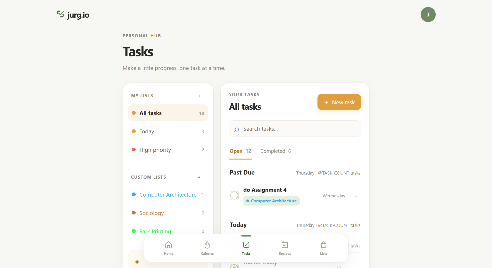
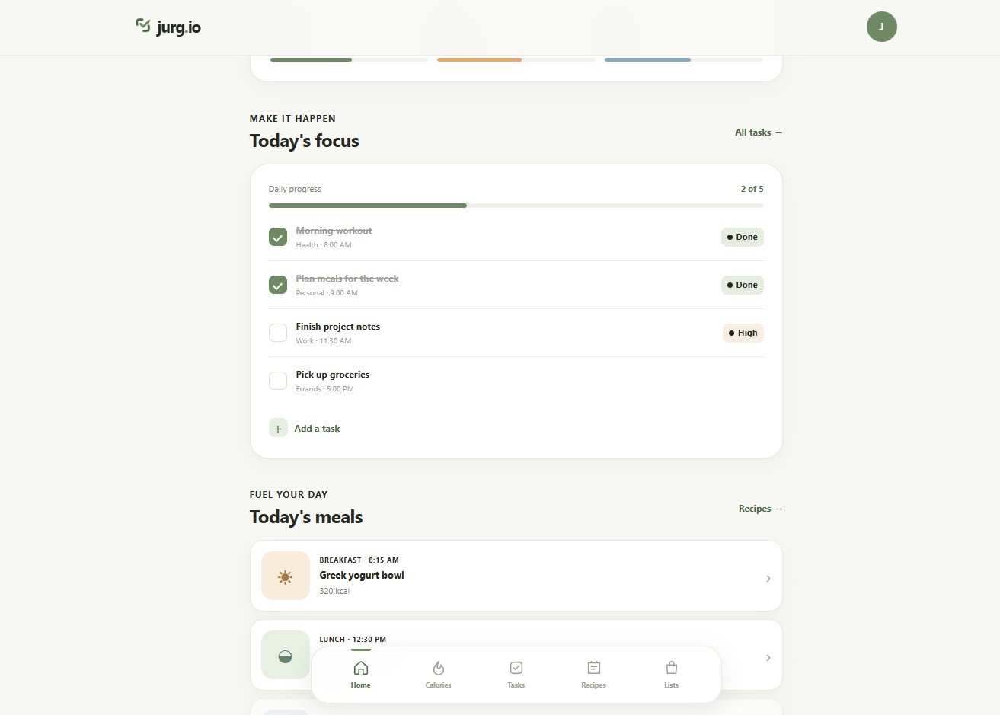
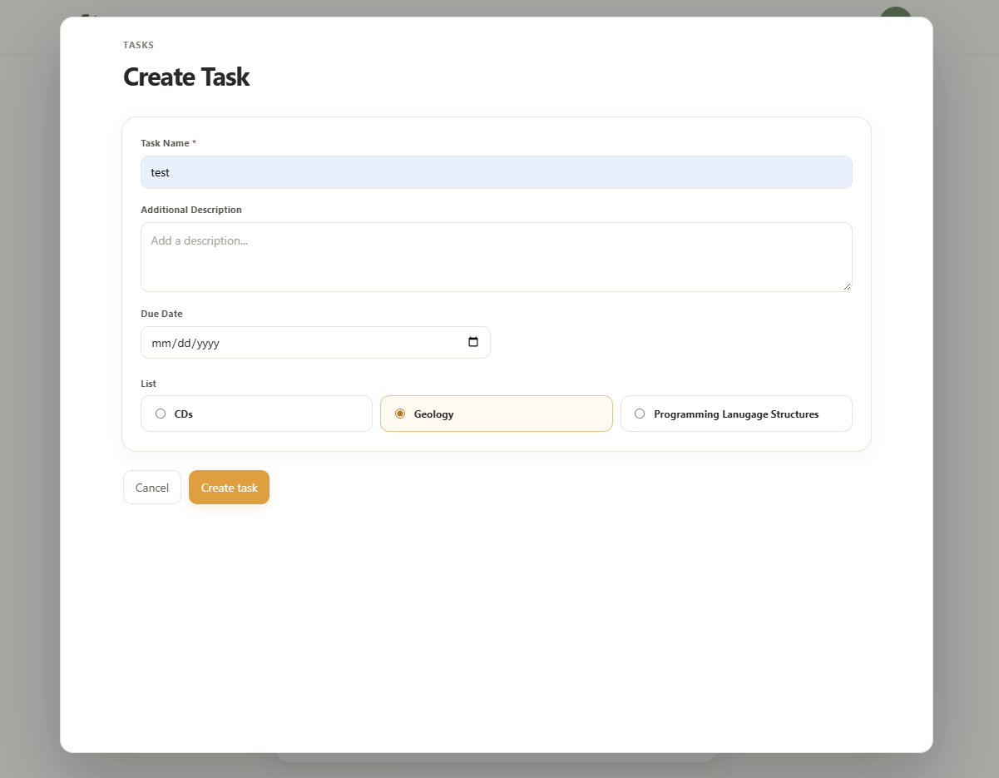
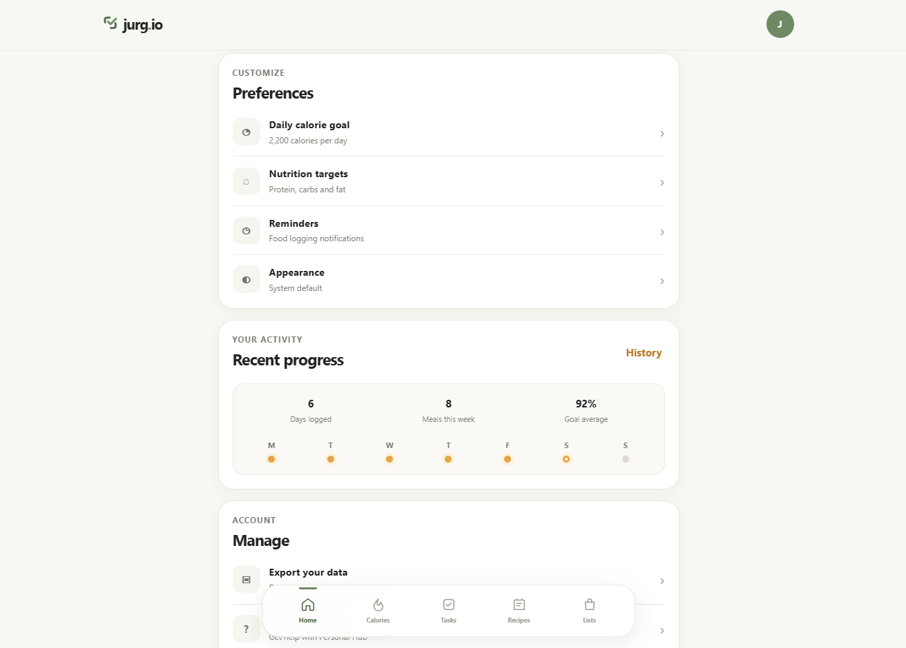

01
Calorie Tracker
Users are able to track their daily calorie intake and set goals for their nutrition.
jurg.io is a personal productivity application built with raw html, css and javascript.

jurg.io is a personal productivity application, designed to improve daily workflows and task management.
The goal was simple: to create a personal productivity application that would help me manage my daily tasks and improve my workflow. I wanted to create something that was simple, yet effective, and that would help me stay organized and focused.
Before jurgio, I struggled to manage my todos, track my calorie intake, and manage my time effectively. I wanted to create a single application that would help me manage all of these aspects of my life, and jurgio was the result.

Home screen of jurg.io, showcasing the main dashboard and task management features.
Users are able to track their daily calorie intake and set goals for their nutrition.
Users are able to create and manage their daily tasks, set priorities, and track their progress.
These two features are combined into a single dashboard, allowing users to see their progress and manage their health in one place.

